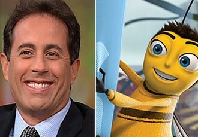

Production & Release
The development of Bee Movie began when Steven Spielberg approached DreamWorks Animation CEO and co-founder Jeffrey Katzenberg after Jerry Seinfeld asked him to make an animated film featuring insects. Production began in 2003. Seinfeld spent a week in Los Angeles working on it. Teleconferencing system HP Halo was installed in Seinfeld's office in New York, enabling him to work on the film and interact between coasts. Seinfeld said he set the film in New York because it was "the Tigris and Euphrates of comedy", and Katzenberg was the main reason for making the film. The budget was approximately $150 million. Spielberg was in two live-action trailers of this film in November 2006 and early 2007 where he interacted with Seinfeld, who wore a bee costume.
The 91-minute Bee Movie debuted in New York City on October 25, 2007, followed by a premiere on October 28, in Los Angeles. It was released in the United States on November 2. The film was produced by DreamWorks Animation and Columbus 81 Productions, and distributed by Paramount Pictures. Bee Movie Game was released in October 2007 for multiple platforms.
Paramount Home Entertainment released Bee Movie on DVD (single- and double-disc) on March 11, 2008,
and on Blu-ray in May. The DVD extras include the "Inside the Hive: The Cast of Bee Movie" and
"Tech of Bee Movie" featurettes, "We Got the Bee" music video, "Meet Barry B. Benson" feature,
interactive games, a filmmaker commentary, alternate endings, lost scenes, the live-action trailers,
and Jerry's Flight Over Cannes. An HD DVD version of the film was canceled after the
discontinuation of that format.
Reception
Bee Movie earned $126.6 million in the United States and Canada and $166.9 million in other countries,
for a worldwide total of $293.5 million. DreamWorks Animation reported the film's net profit as
$27.3 million, particularly home media revenues.[13]
The film was released with American Gangster and Martian Child on November 2, 2007. Bee Movie
earned $10.2 million on its first day. The film debuted at second earning $39.1 million from 3,928
theaters. Its second weekend earnings dropped by 32 percent to $26 million, and followed
by another $14.3 million the third weekend.[18] Bee Movie completed its theatrical run in the United
States and Canada on February 14, 2008.
Bee Movie has an approval rating of 49% based on 174 professional reviews on the review aggregator website Rotten Tomatoes, with an average rating of 5.6/10. Its critical consensus reads, "Bee Movie has humorous moments, but its awkward premise and tame delivery render it mostly forgettable." Metacritic (which uses a weighted average) assigned Bee Movie a score of 54 out of 100 based on 34 critics, indicating "mixed or average reviews". Audiences polled by CinemaScore gave the film an average grade of "B+" on an A+ to F scale.
Michael Phillips of the Chicago Tribune gave the film two and a half stars out of four, saying "It's on the easygoing level of Surf's Up, and a full tick up from, say, Over the Hedge or The Ant Bully. But given the Seinfeld pedigree it's something of a disappointment." Peter Travers of Rolling Stone gave the film three out of four stars, saying "At its relaxed best, when it's about, well, nothing, the slyly comic Bee Movie is truly beguiling." Desson Thomson of The Washington Post said, "Bee Movie feels phoned in on every level. The images, usually computer animation's biggest draw, are disappointingly average. And as for the funny stuff, well, that's where you were supposed to come in."
A. O. Scott of The New York Times gave the film three and a half stars out of four, saying "The most genuinely apian aspect of Bee Movie is that it spends a lot of its running time buzzing happily around, sniffing out fresh jokes wherever they may bloom." Claudia Puig gave the film one and a half stars out of four, saying "Bee Movie is certainly not low-budget, but it has all the staying power and creative value of a B-movie. The secret life of bees, as told by Seinfeld, is a bore with a capital B." Steven Rea of The Philadelphia Inquirer gave the film three stars out of four, saying "Bee Movie is not Shrek, and it is not Ratatouille either (by far the standout computer-animated feature of the year). But it has enough buzzing wit and eye-popping animation to win over the kids—and probably more than a few parents, too." Richard Roeper gave the film a positive review, saying "This is a beautifully animated, cleverly executed, warm and funny adventure."
Roger Ebert gave the film two out of four stars, saying "All of this material, written by Seinfeld and writers associated with his television series, tries hard, but never really takes off. We learn at the outset of the movie that bees theoretically cannot fly. Unfortunately, in the movie, that applies only to the screenplay. It is really, really, really hard to care much about a platonic romantic relationship between Renee Zellweger and a bee, although if anyone could pull it off, she could." Ty Burr of The Boston Globe gave the film three out of four stars, saying "The vibe is loose-limbed and fluky, and the gags have an extra snap that's recognizably Seinfeldian. If I believed in a sitcom afterlife, I'd swear the whole thing was cooked up by Kramer and George's dad."
Bee Movie led the 35th Annie Awards season with five nominations (including Best Animated Feature). At the 65th Golden Globe Awards, it was nominated for Best Animated Feature Film. The 13th Critics' Choice Awards nominated the film for Best Animated Feature.